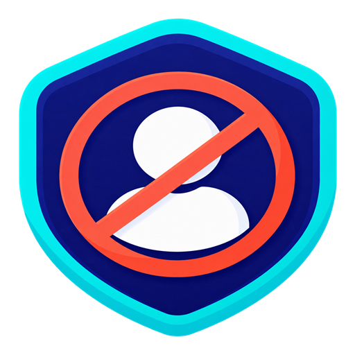

1
Find a creator
Browse YouTube normally. ChannelFence adds a small ⊘ control beside creator names.
Hard-block unwanted creators across YouTube’s Home feed, search results, recommendations, Shorts, comments, and direct pages.
Open YouTube and block a creator
Browse YouTube normally. ChannelFence adds a small ⊘ control beside creator names.
Select the control and that creator disappears across supported YouTube surfaces.
Use the toolbar icon to pause ChannelFence, undo a block, or manage your complete list.
No account. No tracking. No developer-controlled server. Your block list stays in Chrome’s local extension storage.